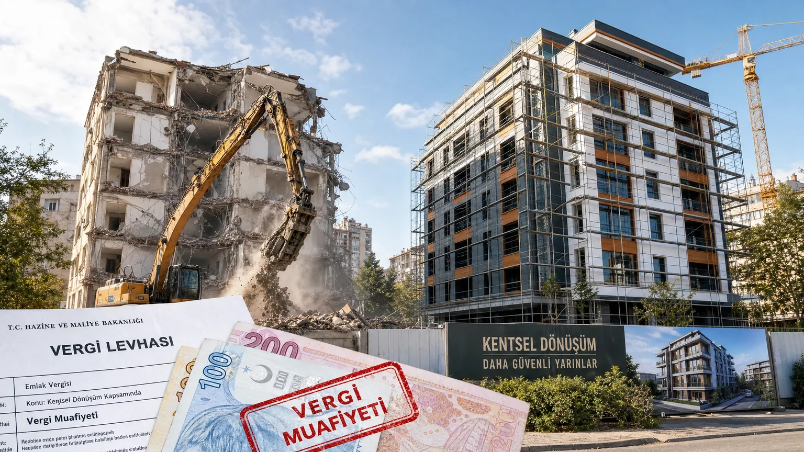

Kentsel Dönüşümde Vergi Muafiyeti 2026 — Tam Rehber
6306 sayılı Afet Riski Altındaki Alanların Dönüştürülmesi Hakkında Kanun, riskli binaların yenilenmesini teşvik etmek için geniş vergi muafiyetleri sunar. Çoğu ev sahibi bu hakların hepsinden yararlanmadığı için yüz binlerce TL kaybeder. Bu rehberde 8 farklı vergi avantajı detaylandırılıyor.
Kentsel Dönüşüm Sürecinde Hangi Vergiler Muaf Tutulur?
6306 sayılı yasanın 7. maddesi, riskli yapı kapsamına giren binaların dönüşüm sürecinde aşağıdaki vergi ve harçlardan muaf olduğunu hükmediyor: KDV (yapı satışı ve kira yardımı dahil), tapu harcı, noter ücreti, gelir vergisi (kira yardımı), damga vergisi, belediye harçları, emlak vergisi (3 yıl).
Önemli detay: muafiyetlerin hepsi otomatik değil. Riskli yapı tespit raporu alınmış olması ve dönüşüm anlaşmasının resmi olarak imzalanmış olması şarttır. Yetersiz belgelendirme nedeniyle her yıl binlerce kişi bu haklarını kullanamadan kalır.
KDV Muafiyeti: Kimler Yararlanabilir?
Riskli binanın yıkılıp yeniden yapılması sürecinde alınan yeni dairenin KDV'si %0'dır. Standart konut satışında %1-20 arası değişen KDV bu binalarda alınmaz. Tasarruf: 1 milyon TL'lik bir konutta 100.000-200.000 TL arasında KDV avantajı.
Hak sahibi: orijinal binadaki dairenin tapu sahibi. Kiracılar bu muafiyetten yararlanamaz. Eğer arsa payı dağılımı yeniden yapıldıysa (örn. 1 daireden 2 daireye düştüyse), muafiyet sadece eski daire değerine kadar geçerli — fazlası için normal KDV ödenir.
Tapu Harcı ve Noter Ücreti İstisnaları
Tapu devir işlemlerinde alıcı ve satıcıdan toplam %4 oranında harç alınır (2026 itibarıyla). Kentsel dönüşüm kapsamındaki tapu işlemlerinde bu harç tamamen muaf. 1 milyon TL'lik daire için 40.000 TL tasarruf.
Noter ücreti, müteahhit ile yapılan dönüşüm sözleşmesinde de muaf. Standart ücreti 5.000-15.000 TL arasıdır. Ek olarak arsa pay sözleşmesi, yıkım izni gibi tüm noter işlemleri ücretsizdir.
Kira Yardımı Vergi Muafiyeti Var mı?
Devlet, dönüşüm süresince hak sahibine aylık kira yardımı verir (2026'da büyük şehirlerde aylık 6.500-10.000 TL). Bu kira yardımı gelir vergisinden tamamen muaftır. Yıllık beyan zorunluluğu yoktur.
Ayrıca aldığınız kira yardımı, sosyal yardım programlarından (örn. AGİ) yararlanmanızı engellemez. Kira ödemediğiniz halde yardım almak yasal — devletin amacı dönüşümü hızlandırmak.
Gelir Vergisi ve Kentsel Dönüşüm Kazançları
Eğer yıkılan binada birden fazla daireniz vardı ve dönüşüm sonrası bunları sattınız: 5 yıl tutma şartı kentsel dönüşüm dairelerinde aranmaz. Erken satışta gelir vergisi muafiyeti uygulanır. Standart konut için 5 yıl içinde satışta %30 gelir vergisi alınır.
Müteahhit ile yapılan kat karşılığı sözleşmede aldığınız fazla daireler için de aynı muafiyet geçerli. Kazanç 'değer artışı' olarak tanımlanmaz, 'mülkiyet değişimi' sayılır.
Muafiyetten Yararlanmak İçin Gerekli Belgeler
1. Riskli yapı tespit raporu (yetkili kuruluştan, en az 30 günlük). 2. Dönüşüm sözleşmesi (müteahhit veya bakanlık ile). 3. Tapu fotokopisi. 4. Hak sahibi listesi (bina paydaşları). 5. Belediye yıkım izni.
Bu belgelerin hepsi noterden tasdikli kopyalarıyla başvurularda kullanılır. Eksik belge ile yapılan başvurularda muafiyet reddedilir; sonradan geriye dönük talep mümkün olabilir ama 2 yılı geçince hak düşer.
Başvuru Süreci: Belediye mi, Bakanlık mı?
İki paralel başvuru yolu var: (1) Belediye yolu: Bina paydaşlarının 2/3'ü kabul ederse belediye dönüşümü organize eder. Hızlı ama paydaş kavgası riski. (2) Bakanlık yolu: Çevre Şehircilik Bakanlığı'na başvuru. Daha yavaş ama paydaş zorlama imkanı var.
Vergi muafiyetleri her iki yolda da geçerli. Vergi dairesine başvuru için 'Riskli Yapı Tespit Belgesi' yeterlidir. Belediye dosyaları otomatik olarak vergi dairesine bildirilir.
2026 Yılı İtibarıyla Değişen Düzenlemeler
Şubat 2025'te 6306 sayılı yasaya yapılan eklemelerle muafiyet süreleri uzatıldı. Eski yasada emlak vergisi muafiyeti 2 yıldı, şimdi 3 yıl. Kira yardımı süresi 18 aydan 24 aya çıkarıldı.
Ayrıca yeni eklenen madde ile, dönüşüm sonrası yapılan yeni binanın 5 yıl boyunca emlak vergisi %50 indirimli uygulanıyor. Bu, deprem güvenliği yüksek yeni yapıyı teşvik eden ek avantaj.
Sık Yapılan Hatalar ve Kaçırılan Muafiyetler
Hata 1: Müteahhit faturalarında KDV gösterilmesi. Hak sahibi farkına varmadan KDV ödüyor olabilir. Mutlaka 'KDV muafiyetli' fatura talep edin.
Hata 2: Tapu harcının ödendiğini düşünüp talep etmemek. Tapuda harç gözükmese bile resmi belgeyle iade alınabilir.
Hata 3: Yeni dairenin tapuya geçişinde damga vergisi ödenmesi. Bu da muafiyet kapsamında — geri alınmalı.
Sıkça Sorulan Sorular
Riskli yapı raporu olmayan binam dönüşüm vergi muafiyetinden faydalanır mı?
Hayır, muafiyetlerin tamamı 'riskli yapı tespit raporu' belgesine bağlıdır. Önce rapor alınmalı, ardından muafiyet işlemleri başlatılmalıdır.
Kentsel dönüşüm sözleşmesi imzaladım, muafiyetler ne zaman başlar?
Muafiyetler resmi sözleşme tarihinden itibaren işler. Geriye dönük olarak inşaat öncesi dönem için muafiyet uygulanmaz.
Kiracıyım, kentsel dönüşümde kira yardımı alabilir miyim?
Evet, kiracılar 18 ay süreyle kira yardımı alır (vergi muafiyetli). Ev sahibinden bağımsız olarak başvurulabilir.
Bakanlık dönüşümünde KDV muafiyeti otomatik mi?
Otomatik değil; vergi dairesine 'Riskli Yapı Tespit Belgesi' ile başvuru yapılması gerekir. Aksi halde KDV alınır.
Aldığım dönüşüm dairesini hemen satarsam vergi var mı?
Hayır, kentsel dönüşüm kapsamındaki daireler için 5 yıl bekleme şartı uygulanmaz. Erken satışta gelir vergisi alınmaz.